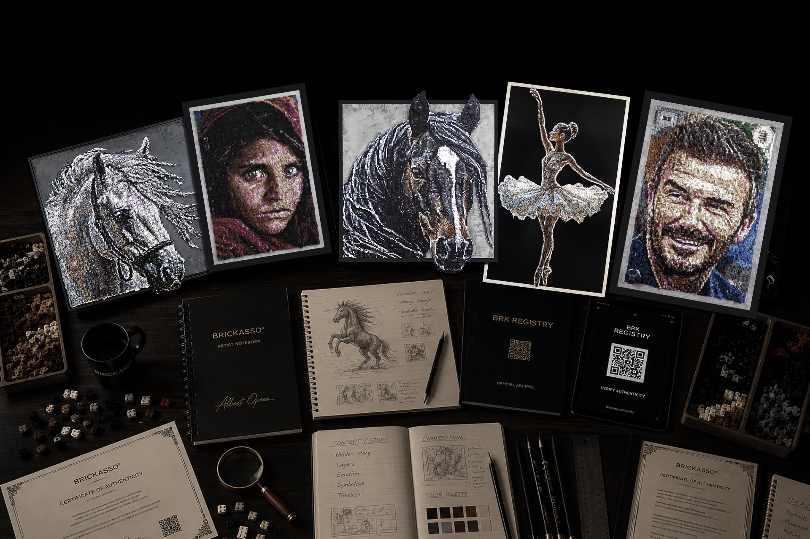
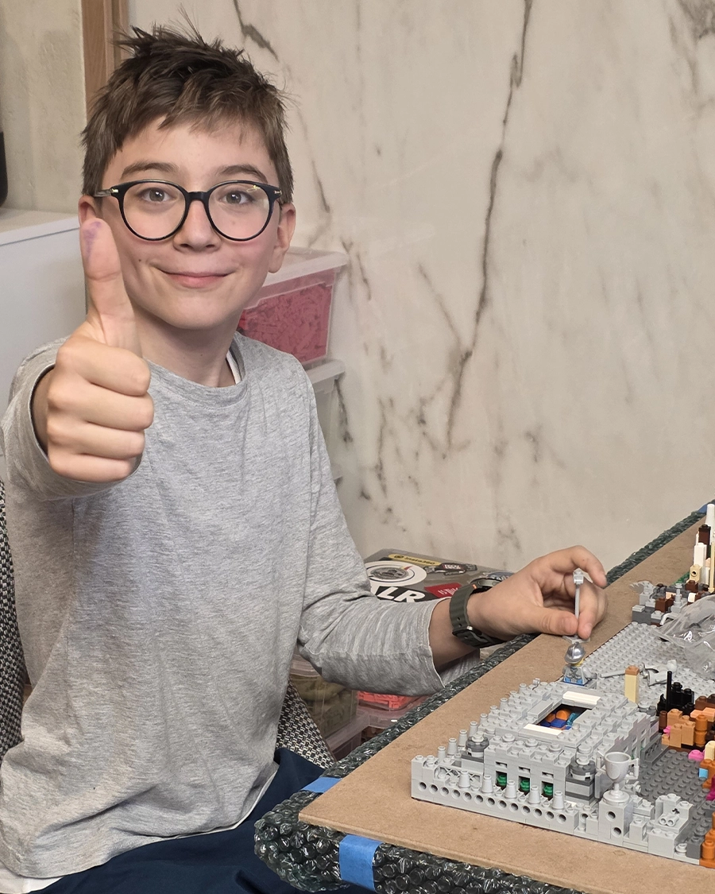
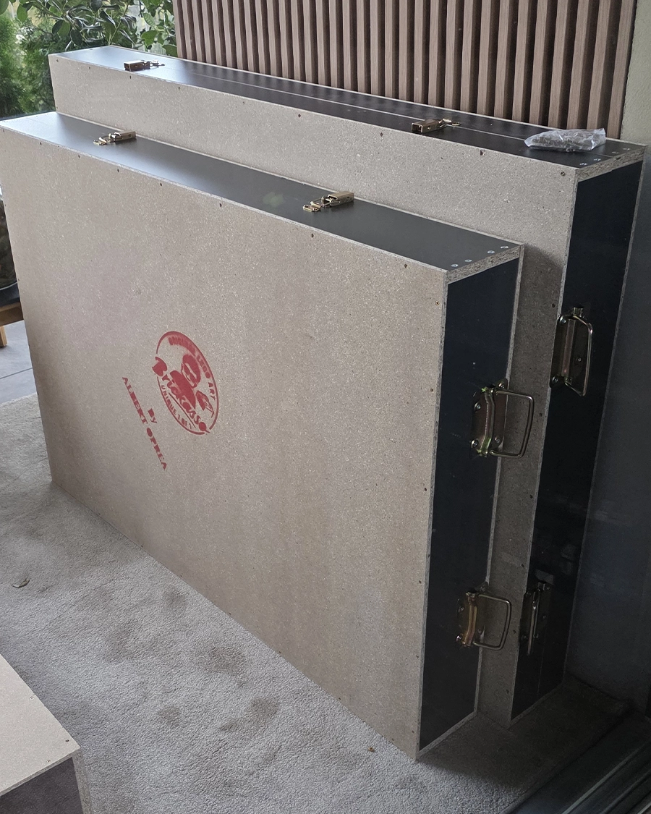

Romania's Got Talent
Albert Oprea reached the final of Romania's Got Talent 2026 and finished in second place, presenting large scale Brickasso® artworks to a national television audience.

Official Artist Portfolio
A documented record of Albert Oprea's artistic practice, public appearances, media coverage, collaborations, commissions and permanent BRK chronology.
The Brickasso® record is built through artworks, exhibitions, national television, interviews, press coverage and cultural moments.
Albert Oprea reached the final of Romania's Got Talent 2026 and finished in second place, presenting large scale Brickasso® artworks to a national television audience.
Brickasso® artworks were presented at Palatul Principilor in Alba Iulia, connecting the works with a cultural setting and public exhibition context.
Several Brickasso® artworks were presented in Bucharest during a public event connected to LEGO® Romania and Children's Day.
Albert appeared publicly at Sports Festival in Cluj, including a stage moment connected to Nadia Comăneci and the work dedicated to her story.
Brickasso® was documented through TV features, interviews, online video reports and media appearances that explain the practice and public journey.

Brickasso® uses LEGO® elements as material, while each artwork begins with an idea, a composition and a story that continues beyond the visible image.
Every work is built by hand through planning, sorting, testing and long manual construction. From a distance, the viewer sees the complete image. Up close, the surface reveals relief, rhythm, hidden scenes and small decisions that give the work a second reading.
The practice is documented through the official BRK Catalogue, certificates, public presentations, media coverage and a permanent archive of each registered artwork.
The following characteristics describe the Brickasso® body of work through facts that can be observed, documented and verified.
Each official Brickasso® artwork is created as a unique original. The same artwork is not reproduced as an edition.
Every element is selected and placed by hand. Major works can require hundreds of hours and several months of focused construction.
The visible subject is only the first layer. Many works include hidden scenes, personal references, symbols and secondary readings.
The surface can include height changes, layered details and physical depth that can only be fully understood from close view.
Every official artwork receives a permanent BRK number. Each number documents one chapter in Albert's artistic evolution.
Official works are accompanied by signed documentation and QR verification through the Brickasso® certificate system.
Each official work is treated as part of a permanent artistic record.
The official Brickasso® Catalogue documents registered works in chronological order.
Each registered artwork receives a permanent BRK number that identifies its position in the chronology.
Official works are accompanied by a signed Certificate of Authenticity and QR verification.
Dedicated artwork pages preserve concept, story, specifications, hidden details and related documentation.
These videos document public stages in the Brickasso® journey, from national television appearances to interviews and exhibition coverage.
Romania's Got Talent 2026 final, the live stage moment that confirmed Brickasso® in front of a national audience.
Open VideoInterview about Brickasso®, LEGO® elements and art as a serious creative practice.
Open VideoVideo report about the Brickasso® journey and the transformation of LEGO® elements into art.
Open VideoPublic exhibition interview at Palatul Principilor, Alba Iulia, documenting Brickasso® in a cultural setting.
Open VideoSelected coverage documents the public context around Albert Oprea and the Brickasso® body of work.

Selected commissions are considered when the subject, scale and story can become part of the artistic direction of Brickasso®.
Each commission remains a one of one artwork. The process includes concept, visual direction, hidden narrative, construction time, framing, transport planning and certificate documentation.
Because every work is built by hand, timing depends on scale and complexity. Major works may require several months from concept to completion.
These answers explain how Brickasso® works are documented, created and placed within the official catalogue.
No. Official Brickasso® artworks are created as unique originals. The same artwork is not reproduced as an edition.
Each official work receives a BRK number and is accompanied by signed documentation. QR verification connects the certificate to the official Brickasso® website.
The number depends on size and complexity. Monumental works can require hundreds of hours and several months of manual construction, which naturally limits annual production.
Selected commissions are considered when the subject, scale and story match the artistic direction of Brickasso®. Each commission remains a one of one artwork.
The complete chronology is documented in the official Brickasso® Catalogue, where each registered artwork appears by BRK number.